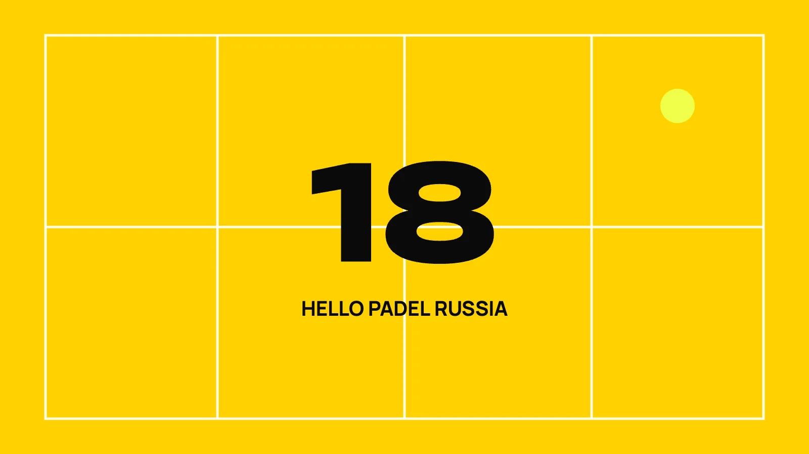
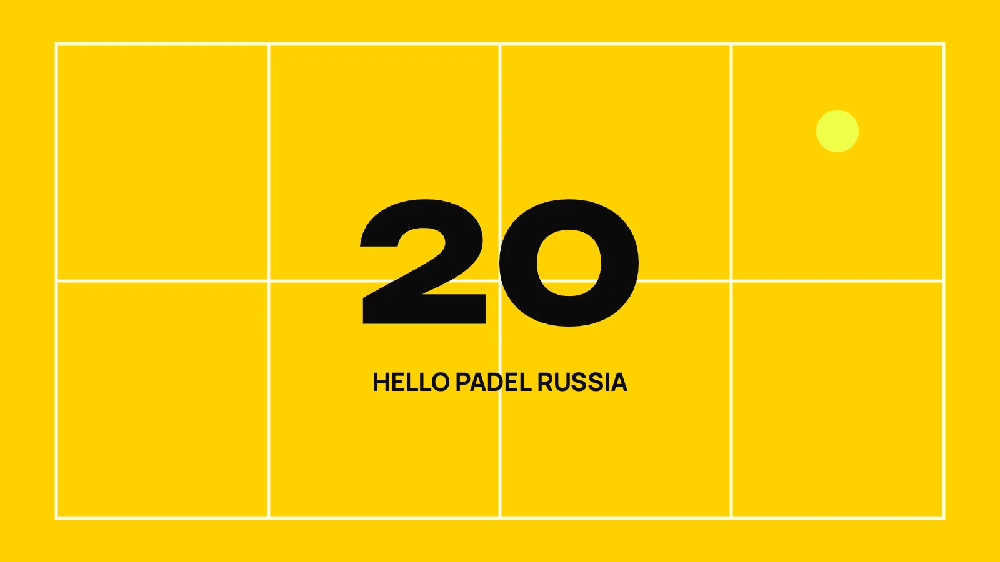
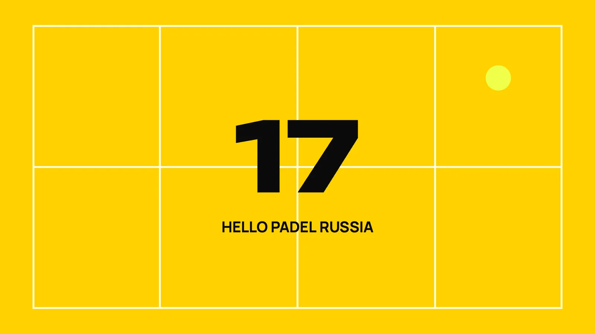

Плато прогресса: почему ты застрял
Полгода назад ты рос каждую неделю. Сейчас ты выигрываешь клубные турниры, но против игроков на голову выше не можешь взять ни одного гейма — и не понимаешь, что именно надо чинить. Это не ощущение. Это конкретный, описанный и очень предсказуемый сценарий.
Что видят тренеры на клиниках
The Padel School проводит клиники по всему миру — от новичков до продвинутых. И одна вещь бросается в глаза каждый раз.
Люди, которые раньше играли в ракеточные виды спорта, схватывают падел очень быстро. Координация рука-глаз и работа с ракеткой уже есть. Поэтому они берут минимум занятий — вместо этого играют матчи и тренировочные игры в клубе. Через какое-то время они уже в «продвинутой» группе своего клуба и выигрывают половину клубных турниров.
А потом приходят на клинику и говорят одно и то же: не получается перешагнуть на следующий уровень, не понимаю почему. И ещё: раньше рост был виден каждую неделю, теперь его нет.
Ответ в одном слове
Фундамент.
Игроки, которые не взяли тренировки — очные или онлайн — в начале пути, обычно не осваивают технические основы достаточно хорошо. И это догоняет их позже, в виде плато.
Ирония в том, что новички и люди из неракеточных видов спорта обычно берут тренера сразу — и продолжают расти ровным темпом. А те, кто пришёл с базой и решил подождать год-другой, пока не упрётся в потолок, потом мучаются сильнее всех. Потому что фундамент не выстроен, а сломать въевшуюся привычку намного тяжелее, чем поставить движение с нуля. Тяжёлая работа для тренера и сплошное раздражение для игрока.
Где именно рвётся фундамент
Три зоны, на которых нужно делать акцент с самого начала:
- стекло — как читать отскок и играть от него;
- удары над головой — техника и выбор нужного варианта;
- удары с задней линии.
Если ты сейчас на плато — искать причину надо там, а не в тактике, не в ракетке и не в партнёре.
Почему матчи в клубе не вытаскивают
Ты играешь много, но играешь в своей привычной манере. Все твои компенсации и обходные пути работают против соперников твоего уровня — поэтому ты их не замечаешь. Их видно только тогда, когда напротив стоит игрок сильнее, и тогда уже поздно разбираться в середине матча.
Отдельно про качество: в статье подчёркнуто слово «высококачественные» тренировки. Правильный совет в нужный момент — это и есть ингредиент, который решает. Плохой совет создаёт ещё одну привычку, которую потом придётся ломать.
Хорошая новость
Плато можно избежать. И из него можно выйти. Это не потолок твоих способностей — это недостроенный фундамент. Займись основами, и через год ты скажешь себе спасибо.
Что делать на следующей тренировке
Раз. Выбери одну из трёх зон — стекло, удары над головой или задняя линия — и честно определи слабейшую. Не ту, которая тебе нравится.
Два. Сними себя на видео в этой зоне: 15–20 повторов, камера сбоку. Часто плато видно на записи за 30 секунд, а на корте не видно вообще.
Три. Следующую тренировку целиком отдай этой зоне. Без матчей. Матч — это тест, а тебе сейчас нужно строить.
Плато почти всегда упирается в то, чего ты сам в своей технике не видишь, — и именно за этим взглядом со стороны люди приходят к тренеру.
Источник: How Advanced Players Can Avoid The Padel Improvement Plateau
Это одна тема из 166
В курсе Hello Padel Russia каждый удар разобран по шагам: подготовка, выполнение, куда направлять, частые ошибки. 9 модулей, 166 уроков, более 15 часов.
Читать дальше

Почему теннисисты играют в падел хуже, чем новички
Теннисист выходит на падел-корт уверенным. Он хорошо играет с лёта, естественно бьёт над головой, у него…
3 мин
Как расти, если выходишь на корт раз в неделю
Ты играешь регулярно уже который месяц. Матчи, сеты, соперники разные. А уровень стоит на месте. Проблема не…
3 мин
10 ошибок новичка, которые видно с трибуны за 30 секунд
Сядь у любого корта на пять минут и посмотри на игру со стороны. Уровень новичка выдаёт не техника удара — её…
3 мин